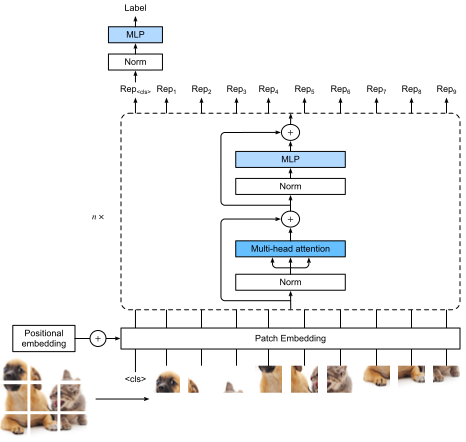

11.8. 视觉Transformer¶
Transformer架构最初是为序列到序列学习而提出的，主要关注机器翻译。随后，Transformer成为各种自然语言处理任务中的首选模型 (Brown et al., 2020, Devlin et al., 2018, Radford et al., 2018, Radford et al., 2019, Raffel et al., 2020)。然而，在计算机视觉领域，占主导地位的架构一直是CNN（ 8节 ）。自然而然地，研究者开始思考：通过将Transformer模型改造用于图像数据，是否可能取得更好的效果？这个问题在计算机视觉界引发了极大的兴趣。最近，Ramachandran et al. (2019) 提出了一种用自注意力取代卷积的方案。然而，该方案在注意力中使用了特殊的模式，使得模型难以在硬件加速器上扩展。随后，Cordonnier et al. (2020) 从理论上证明了自注意力可以学会表现得与卷积类似。在实证上，从图像中取出\(2 \times 2\)的图像块作为输入，但如此小的图像块尺寸使得模型只适用于低分辨率的图像数据。
视觉Transformer（vision Transformer，ViT）对图像块尺寸不作特定约束，它从图像中提取图像块，送入Transformer编码器以获得全局表示，最后再将其变换用于分类 (Dosovitskiy et al., 2021)。值得注意的是，Transformer展现出比CNN更好的可扩展性：在更大的数据集上训练更大的模型时，视觉Transformer以显著的优势超过ResNet。与自然语言处理中网络架构设计的格局类似，Transformer也已成为计算机视觉领域的变革者。
import torch
from torch import nn
from d2l import torch as d2l
import jax
from flax import linen as nn
from jax import numpy as jnp
from d2l import jax as d2l
11.8.1. 模型¶
图11.8.1 描绘了视觉Transformer的模型架构。该架构由一个对图像做图像块化的主干（stem）、一个基于多层Transformer编码器的主体（body）和一个将全局表示变换为输出标签的头（head）组成。

图11.8.1 视觉Transformer架构。在这个例子中，一幅图像被分成九个图像块。一个特殊的“<cls>”词元与九个展平的图像块分别经过图像块嵌入和\(\mathit{n}\)个Transformer编码器块，变换为十个表示。然后，“<cls>”的表示被进一步变换为输出标签。¶
考虑一幅高为\(h\)、宽为\(w\)、通道数为\(c\)的输入图像。指定图像块的高度和宽度均为\(p\)，图像被分成由\(m = hw/p^2\)个图像块组成的序列，其中每个图像块被展平为一个长度为\(cp^2\)的向量。这样，Transformer编码器就可以把图像块与文本序列中的词元类似地处理。一个特殊的“<cls>”（类别）词元和\(m\)个展平的图像块被线性投影为由\(m+1\)个向量组成的序列，并与可学习的位置编码相加。多层Transformer编码器把这\(m+1\)个输入向量变换为相同数量、相同长度的输出向量表示。其工作方式与 图11.7.1 中原始Transformer编码器完全相同，只是规范化的位置不同。由于“<cls>”词元通过自注意力关注所有图像块（参见 图11.6.1），它在Transformer编码器输出中的表示将被进一步变换为输出标签。
11.8.2. 图像块嵌入¶
要实现视觉Transformer，我们先从 图11.8.1 中的图像块嵌入开始。把图像分成图像块，并对这些展平的图像块进行线性投影，可以简化为一次卷积运算，其中卷积核大小和步幅大小都设成图像块的大小。
class PatchEmbedding(nn.Module):
def __init__(self, img_size=96, patch_size=16, num_hiddens=512):
super().__init__()
def _make_tuple(x):
if not isinstance(x, (list, tuple)):
return (x, x)
return x
img_size, patch_size = _make_tuple(img_size), _make_tuple(patch_size)
self.num_patches = (img_size[0] // patch_size[0]) * (
img_size[1] // patch_size[1])
self.conv = nn.LazyConv2d(num_hiddens, kernel_size=patch_size,
stride=patch_size)
def forward(self, X):
# Output shape: (batch size, no. of patches, no. of channels)
return self.conv(X).flatten(2).transpose(1, 2)
class PatchEmbedding(nn.Module):
img_size: int = 96
patch_size: int = 16
num_hiddens: int = 512
def setup(self):
def _make_tuple(x):
if not isinstance(x, (list, tuple)):
return (x, x)
return x
img_size, patch_size = _make_tuple(self.img_size), _make_tuple(self.patch_size)
self.num_patches = (img_size[0] // patch_size[0]) * (
img_size[1] // patch_size[1])
self.conv = nn.Conv(self.num_hiddens, kernel_size=patch_size,
strides=patch_size, padding='SAME')
def __call__(self, X):
# Output shape: (batch size, no. of patches, no. of channels)
X = self.conv(X)
return X.reshape((X.shape[0], -1, X.shape[3]))
在下面的例子中，以高和宽均为img_size的图像作为输入，图像块嵌入输出(img_size//patch_size)**2个图像块，这些图像块被线性投影为长度为num_hiddens的向量。
img_size, patch_size, num_hiddens, batch_size = 96, 16, 512, 4
patch_emb = PatchEmbedding(img_size, patch_size, num_hiddens)
X = torch.zeros(batch_size, 3, img_size, img_size)
d2l.check_shape(patch_emb(X),
(batch_size, (img_size//patch_size)**2, num_hiddens))
img_size, patch_size, num_hiddens, batch_size = 96, 16, 512, 4
patch_emb = PatchEmbedding(img_size, patch_size, num_hiddens)
X = jnp.zeros((batch_size, img_size, img_size, 3))
output, _ = patch_emb.init_with_output(d2l.get_key(), X)
d2l.check_shape(output, (batch_size, (img_size//patch_size)**2, num_hiddens))
11.8.3. 视觉Transformer编码器¶
视觉Transformer编码器的MLP与原始Transformer编码器的逐位置前馈网络略有不同（参见 11.7.2节）。首先，这里的激活函数使用高斯误差线性单元（GELU），可以把它看作ReLU的一种更平滑的版本 (Hendrycks and Gimpel, 2016)。其次，MLP中每个全连接层的输出都应用了暂退法进行正则化。
class ViTMLP(nn.Module):
def __init__(self, mlp_num_hiddens, mlp_num_outputs, dropout=0.5):
super().__init__()
self.dense1 = nn.LazyLinear(mlp_num_hiddens)
self.gelu = nn.GELU()
self.dropout1 = nn.Dropout(dropout)
self.dense2 = nn.LazyLinear(mlp_num_outputs)
self.dropout2 = nn.Dropout(dropout)
def forward(self, x):
return self.dropout2(self.dense2(self.dropout1(self.gelu(
self.dense1(x)))))
class ViTMLP(nn.Module):
mlp_num_hiddens: int
mlp_num_outputs: int
dropout: float = 0.5
@nn.compact
def __call__(self, x, training=False):
x = nn.Dense(self.mlp_num_hiddens)(x)
x = nn.gelu(x)
x = nn.Dropout(self.dropout, deterministic=not training)(x)
x = nn.Dense(self.mlp_num_outputs)(x)
x = nn.Dropout(self.dropout, deterministic=not training)(x)
return x
视觉Transformer编码器块的实现遵循 图11.8.1 中的前置规范化（pre-normalization）设计，即规范化恰好应用在多头注意力或MLP之前。与后置规范化（post-normalization； 图11.7.1 中的“加与规范化”）——规范化恰好放在残差连接之后——相比，前置规范化能使Transformer的训练更有效或更高效 (Baevski and Auli, 2018, Wang et al., 2019, Xiong et al., 2020)。
class ViTBlock(nn.Module):
def __init__(self, num_hiddens, norm_shape, mlp_num_hiddens,
num_heads, dropout, use_bias=False):
super().__init__()
self.ln1 = nn.LayerNorm(norm_shape)
self.attention = d2l.MultiHeadAttention(num_hiddens, num_heads,
dropout, use_bias)
self.ln2 = nn.LayerNorm(norm_shape)
self.mlp = ViTMLP(mlp_num_hiddens, num_hiddens, dropout)
def forward(self, X, valid_lens=None):
X = X + self.attention(*([self.ln1(X)] * 3), valid_lens)
return X + self.mlp(self.ln2(X))
class ViTBlock(nn.Module):
num_hiddens: int
mlp_num_hiddens: int
num_heads: int
dropout: float
use_bias: bool = False
def setup(self):
self.attention = d2l.MultiHeadAttention(self.num_hiddens, self.num_heads,
self.dropout, self.use_bias)
self.mlp = ViTMLP(self.mlp_num_hiddens, self.num_hiddens, self.dropout)
@nn.compact
def __call__(self, X, valid_lens=None, training=False):
X = X + self.attention(*([nn.LayerNorm()(X)] * 3),
valid_lens, training=training)[0]
return X + self.mlp(nn.LayerNorm()(X), training=training)
正如 11.7.4节 中那样，视觉Transformer编码器块不会改变其输入形状。
X = torch.ones((2, 100, 24))
encoder_blk = ViTBlock(24, 24, 48, 8, 0.5)
encoder_blk.eval()
d2l.check_shape(encoder_blk(X), X.shape)
X = jnp.ones((2, 100, 24))
encoder_blk = ViTBlock(24, 48, 8, 0.5)
d2l.check_shape(encoder_blk.init_with_output(d2l.get_key(), X)[0], X.shape)
11.8.4. 整合所有组件¶
下面给出视觉Transformer的前向传播，过程很直接。首先，输入图像被送入PatchEmbedding实例，其输出与“<cls>”词元嵌入连结。在暂退法之前，它们与可学习的位置编码相加。然后，输出被送入Transformer编码器，该编码器堆叠num_blks个ViTBlock类的实例。最后，“<cls>”词元的表示由网络的头投影得到。
class ViT(d2l.Classifier):
"""Vision Transformer."""
def __init__(self, img_size, patch_size, num_hiddens, mlp_num_hiddens,
num_heads, num_blks, emb_dropout, blk_dropout, lr=0.1,
use_bias=False, num_classes=10):
super().__init__()
self.save_hyperparameters()
self.patch_embedding = PatchEmbedding(
img_size, patch_size, num_hiddens)
self.cls_token = nn.Parameter(torch.zeros(1, 1, num_hiddens))
num_steps = self.patch_embedding.num_patches + 1 # Add the cls token
# Positional embeddings are learnable
self.pos_embedding = nn.Parameter(
torch.randn(1, num_steps, num_hiddens))
self.dropout = nn.Dropout(emb_dropout)
self.blks = nn.Sequential()
for i in range(num_blks):
self.blks.add_module(f"{i}", ViTBlock(
num_hiddens, num_hiddens, mlp_num_hiddens,
num_heads, blk_dropout, use_bias))
self.head = nn.Sequential(nn.LayerNorm(num_hiddens),
nn.Linear(num_hiddens, num_classes))
def forward(self, X):
X = self.patch_embedding(X)
X = torch.cat((self.cls_token.expand(X.shape[0], -1, -1), X), 1)
X = self.dropout(X + self.pos_embedding)
for blk in self.blks:
X = blk(X)
return self.head(X[:, 0])
class ViT(d2l.Classifier):
"""Vision Transformer."""
img_size: int
patch_size: int
num_hiddens: int
mlp_num_hiddens: int
num_heads: int
num_blks: int
emb_dropout: float
blk_dropout: float
lr: float = 0.1
use_bias: bool = False
num_classes: int = 10
training: bool = False
def setup(self):
self.patch_embedding = PatchEmbedding(self.img_size, self.patch_size,
self.num_hiddens)
self.cls_token = self.param('cls_token', nn.initializers.zeros,
(1, 1, self.num_hiddens))
num_steps = self.patch_embedding.num_patches + 1 # Add the cls token
# Positional embeddings are learnable
self.pos_embedding = self.param('pos_embed', nn.initializers.normal(),
(1, num_steps, self.num_hiddens))
self.blks = [ViTBlock(self.num_hiddens, self.mlp_num_hiddens,
self.num_heads, self.blk_dropout, self.use_bias)
for _ in range(self.num_blks)]
self.head = nn.Sequential([nn.LayerNorm(), nn.Dense(self.num_classes)])
@nn.compact
def __call__(self, X):
X = self.patch_embedding(X)
X = jnp.concatenate((jnp.tile(self.cls_token, (X.shape[0], 1, 1)), X), 1)
X = nn.Dropout(emb_dropout, deterministic=not self.training)(X + self.pos_embedding)
for blk in self.blks:
X = blk(X, training=self.training)
return self.head(X[:, 0])
11.8.5. 训练¶
在Fashion-MNIST数据集上训练视觉Transformer，与 8节 中训练CNN的方法完全一样。
img_size, patch_size = 96, 16
num_hiddens, mlp_num_hiddens, num_heads, num_blks = 512, 2048, 8, 2
emb_dropout, blk_dropout, lr = 0.1, 0.1, 0.1
model = ViT(img_size, patch_size, num_hiddens, mlp_num_hiddens, num_heads,
num_blks, emb_dropout, blk_dropout, lr)
trainer = d2l.Trainer(max_epochs=10, num_gpus=1)
data = d2l.FashionMNIST(batch_size=128, resize=(img_size, img_size))
trainer.fit(model, data)
img_size, patch_size = 96, 16
num_hiddens, mlp_num_hiddens, num_heads, num_blks = 512, 2048, 8, 2
emb_dropout, blk_dropout, lr = 0.1, 0.1, 0.1
model = ViT(img_size, patch_size, num_hiddens, mlp_num_hiddens, num_heads,
num_blks, emb_dropout, blk_dropout, lr)
trainer = d2l.Trainer(max_epochs=10, num_gpus=1)
data = d2l.FashionMNIST(batch_size=128, resize=(img_size, img_size))
trainer.fit(model, data)
11.8.6. 小结与讨论¶
你可能已经注意到，对于像Fashion-MNIST这样的小数据集，我们实现的视觉Transformer并没有超过 8.6节 中的ResNet。即使在ImageNet数据集（120万幅图像）上，也能得到类似的观察结果。这是因为Transformer缺少卷积中一些有用的原则，例如平移不变性和局部性（ 7.1节 ）。然而，当在更大的数据集上训练更大的模型时（例如3亿幅图像），情况就不同了：视觉Transformer在图像分类上大幅超过ResNet，这展示了Transformer在可扩展性方面的内在优越性 (Dosovitskiy et al., 2021)。视觉Transformer的出现改变了图像数据建模中网络设计的格局。很快，凭借DeiT的数据高效训练策略，它们被证明在ImageNet数据集上同样有效 (Touvron et al., 2021)。然而，自注意力的二次复杂度（ 11.6节 ）使得Transformer架构不太适合更高分辨率的图像。为了走向计算机视觉中的通用主干网络，Swin Transformer解决了图像尺寸带来的二次计算复杂度问题（ 11.6.2节 ），并恢复了类卷积的先验，将Transformer的适用范围扩展到图像分类之外的一系列计算机视觉任务，并取得了当时最优的结果 (Liu et al., 2021)。
11.8.7. 练习¶
img_size的取值如何影响训练时间？如果不把“<cls>”词元的表示投影为输出，你会如何投影各图像块表示的平均值？实现这一改动，并观察它如何影响准确率。
你能修改超参数来提高视觉Transformer的准确率吗？